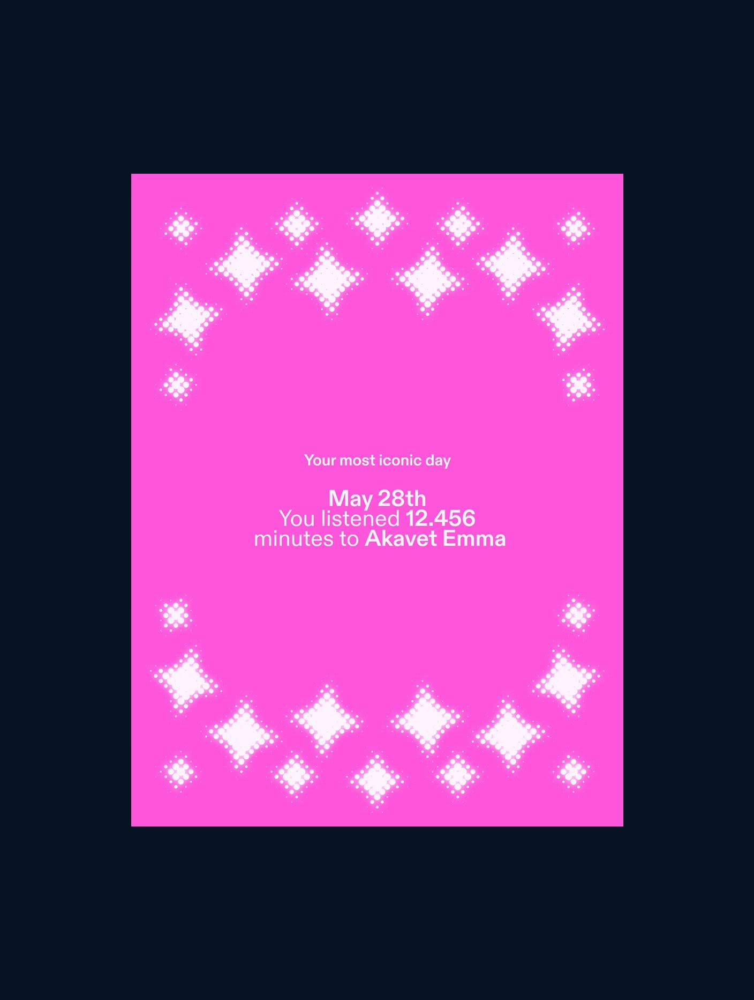
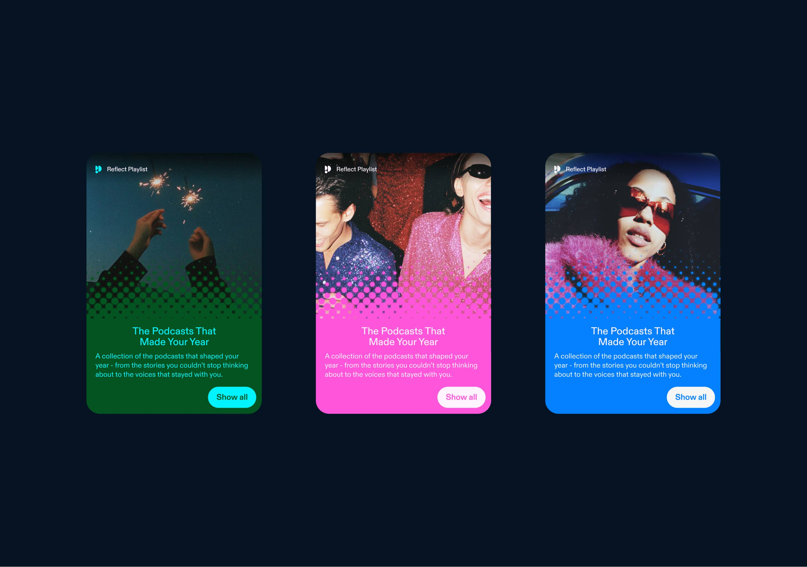
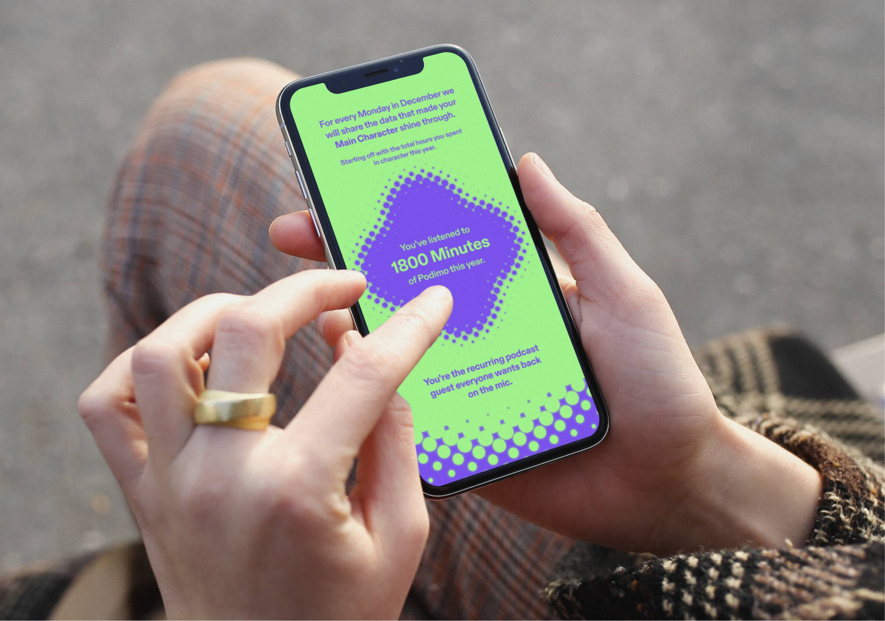
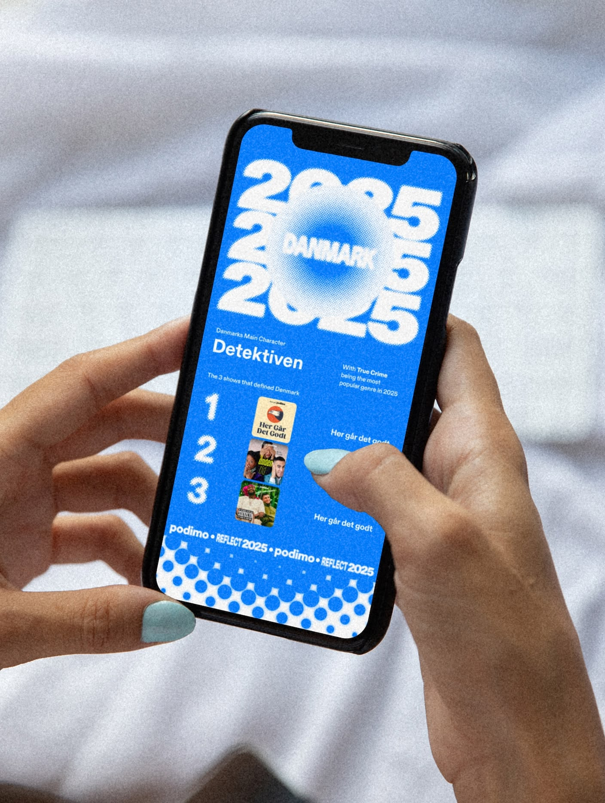
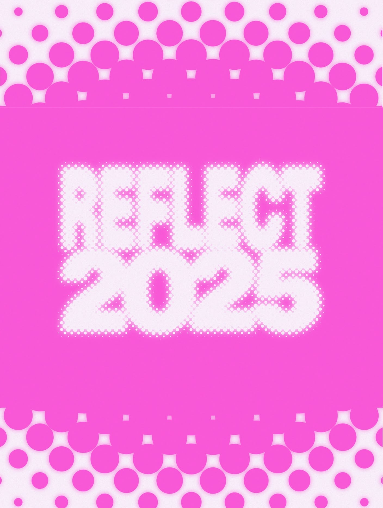
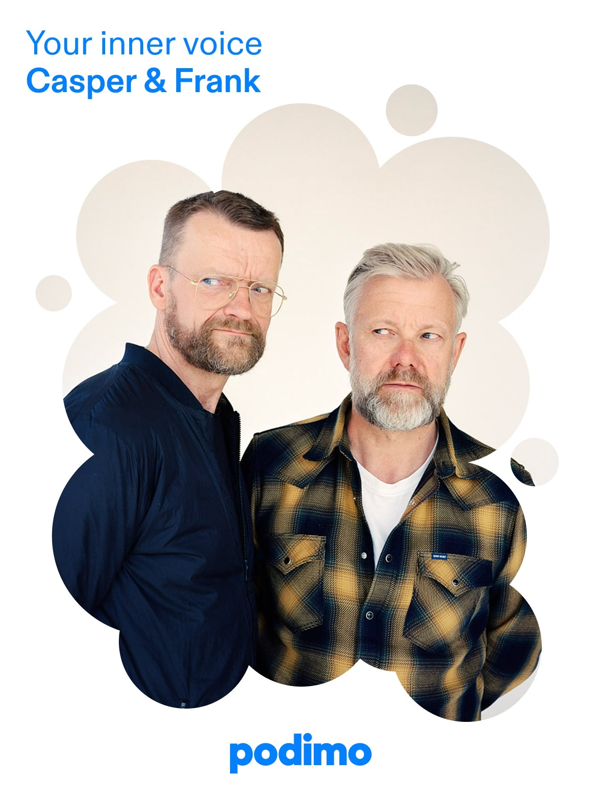

Brand inside the product
Reflect is the design system proving itself at product scale: type, colour and motion carrying a personal narrative through the app itself, localized into six languages without losing the voice. The same identity that runs a campaign or a stage here runs a story about you.


Closer to the creators
The mechanic that separates Reflect from the genre: loyalty, ranked. Every listener could see where they stood among a creator's biggest fans of the year, and the most devoted received personal video messages from the hosts themselves. A year of listening, answered by the person you listened to.



